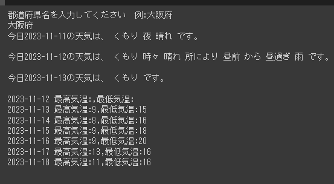
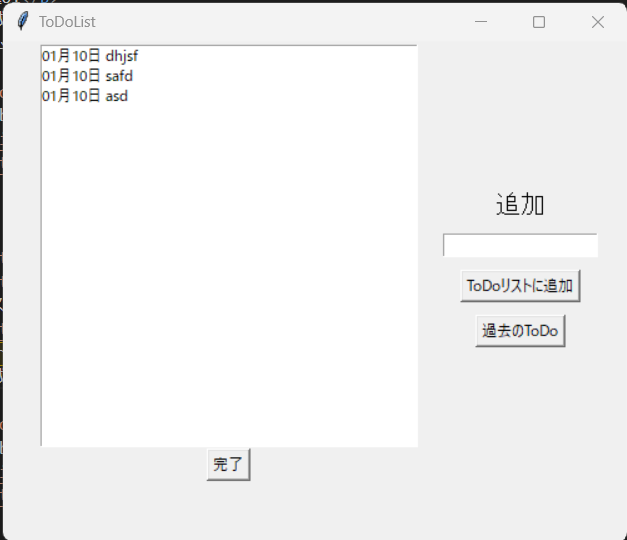
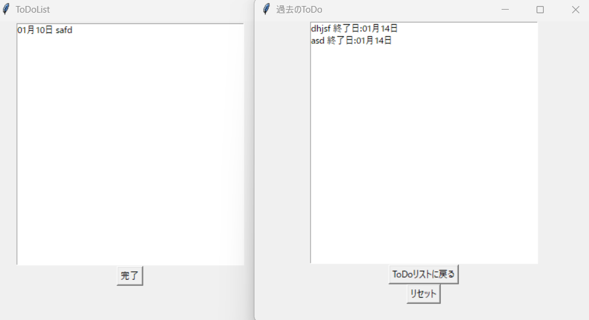
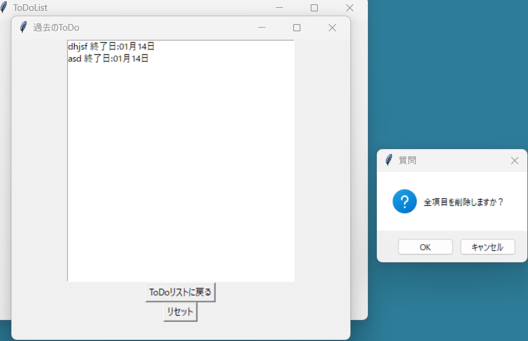
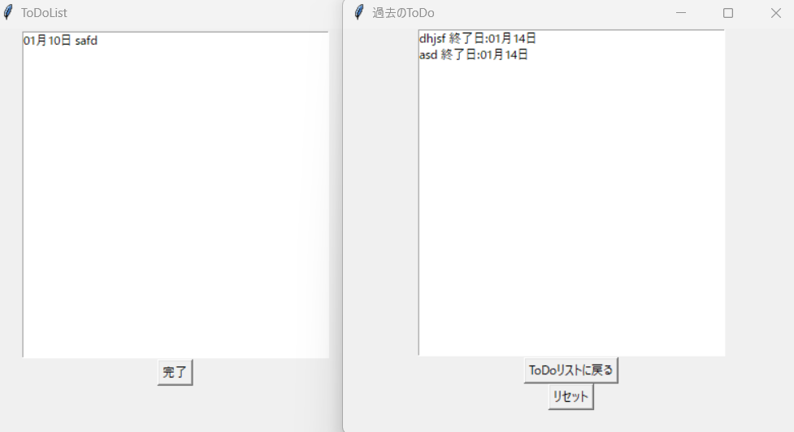
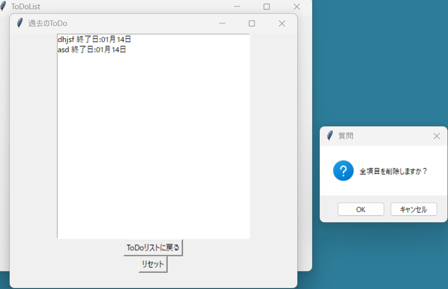

プロフィール
活動
2年高専祭
高専祭で作成したミニゲームのハイスコア記録機能・ランキング機能（UI除く）を作成。 ゲームのリンク
自由課題01
授業内で作成した課題気象庁ホームページで公開されているjsonファイルを利用し、都道府県名を入力すると気象情報を表示するプログラムを作成。プログラムはPython（Jupyter Notebook形式）で作成。 Githubリンク

Todoリスト
リポジトリ 2023年12月～2024年1月 授業内で作成した課題。Todoリストの基本的な機能を、PythonのTkinterで実装。 リストボックスに表示された項目を選択して、下にある「完了」を押すと、表示されなくなる。完了したデータは「過去のTodo」から閲覧することができる。
完了済みのものを含めた全てのデータを削除してリセットすることもできる。
リストとしてデータベースSQLiteを使用しており、sqlite3ライブラリで要素の追加・削除・更新を行っている。





スキル
プログラミング言語
PHP
Python
C#（Visual C#）
HTML/CSS
ソフトウェア等
VSCode
Git・Github
Arduino
Cisco Packet Tracer
Wireshark
TeraTerm